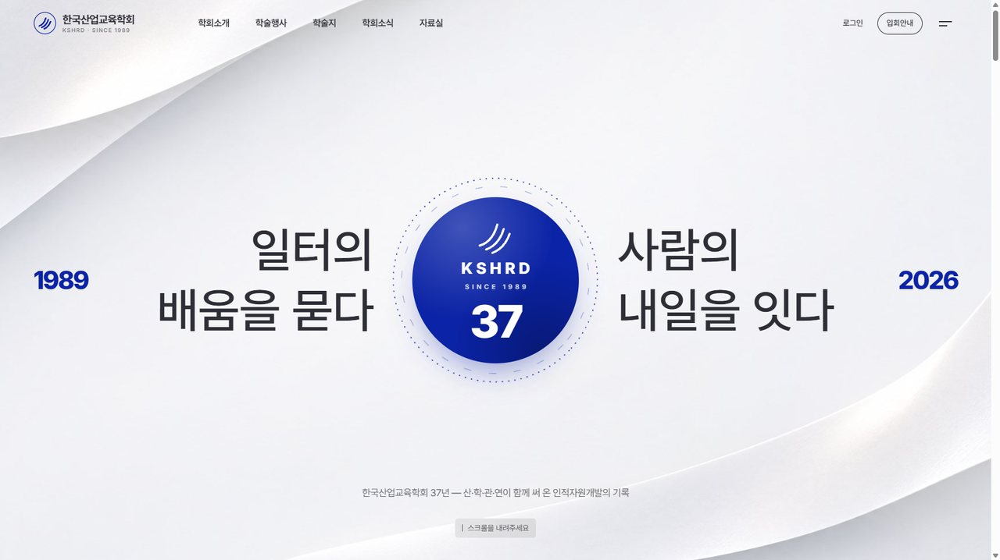
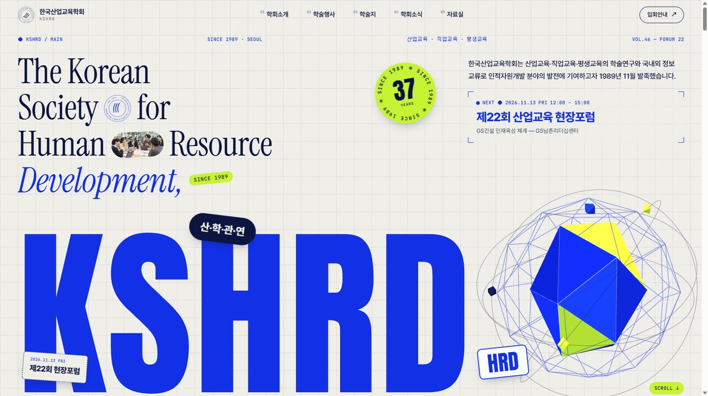
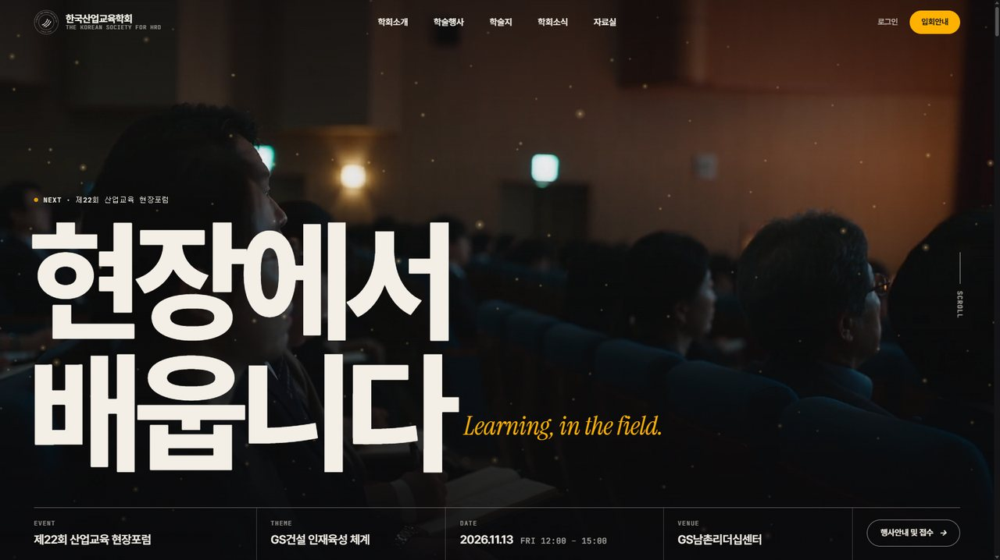

KSHRD RENEWAL · MAIN PAGE DEMOS · 2026.11

한국산업교육학회 리뉴얼 — 메인 데모 3종
레퍼런스 9곳의 연출(스크롤 애니메이션·영상 프레임·입체감·인터랙션)을 소스 수준에서 분석해 한국산업교육학회의 실제 내용(37년 연혁 · 현장포럼 22회 · 학술대회 주제 30년 · 학술지 「산업교육연구」)으로 재구성했습니다. 메인 페이지만 구현했고 메뉴는 이름과 호버 효과만 있습니다.

DEMO 0137년 아카이브레퍼런스 · 산업연구원 50주년 디지털역사관휘장이 그려지며 시작하는 인트로, 1989 ↔ 2026 엠블럼 히어로. 네 시대의 배경이 고정된 채 셰이더로 녹아 바뀌고, 기록 사진이 떠오릅니다. 곡면으로 휘는 학술대회 주제 마퀴, 카드 4장, 학회가 던져온 질문들.
- three.js 셰이더 디졸브
- SVG 스트로크 인트로
- 고정 배경 + 진행 링
- 3D 곡면 마퀴

DEMO 02타이포 중심레퍼런스 · UCLAB + The Design Society + Frontier Dialogues격자 종이 위 초대형 KSHRD와 입체 다면체 로고. 코발트 전면에서 소개 문장이 단어 단위로 모이는 구간, 현장포럼 22회를 장(章)으로 엮은 원색 배너와 고정 목차, 학술대회 주제 30년 마퀴, 모노 라벨 타일.
- three.js 다면체(드래그)
- pin + scrub 단어 정렬
- 드래그 스티커
- 스크램블 호버

DEMO 03사진 중심레퍼런스 · OFFF Forum + The Design Conference + The Land Institute + DAN25강연장 영상 히어로와 행사 정보 띠. 연수원 복도를 지나 세미나홀로 들어가는 영상 프레임 스크롤(145프레임), 사진 위에 뜬 패널 속 현장포럼 가로 카드, 학술지 표지 3D 틸트, 함께하는 기관 타일.
- 영상 프레임 스크롤
- 풀블리드 영상
- 관성 드래그 카드
- 표지 3D 틸트
보는 방법 — PC와 모바일 모두 볼 수 있습니다. 모바일에서는 세로형 경량 영상과 작은 이미지를 따로 받고, 오른쪽 위 버튼으로 전체 메뉴가 열립니다. 데모 2의 다면체와 스티커, 데모 3의 포럼 카드는 드래그할 수 있습니다.
소재 — 사진 33장과 영상 3편은 모두 AI 생성(힉스필드) 시연용입니다. 실제 행사·인물·장소의 사진이 아니며, 실제 사이트에는 학회가 가진 사진으로 바꿉니다. 로고도 현 사이트 파일이 저해상도뿐이라 임시로 그린 휘장입니다.
내용 — 연혁, 현장포럼 목록, 학술대회 주제, 행사 일정, 공지, 사무국 정보는 현행 사이트(e-kshrd.or.kr)에서 가져온 실제 내용입니다.
소재 — 사진 33장과 영상 3편은 모두 AI 생성(힉스필드) 시연용입니다. 실제 행사·인물·장소의 사진이 아니며, 실제 사이트에는 학회가 가진 사진으로 바꿉니다. 로고도 현 사이트 파일이 저해상도뿐이라 임시로 그린 휘장입니다.
내용 — 연혁, 현장포럼 목록, 학술대회 주제, 행사 일정, 공지, 사무국 정보는 현행 사이트(e-kshrd.or.kr)에서 가져온 실제 내용입니다.